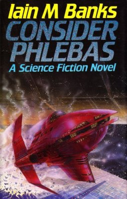

Baao Community College- Library

Welcome to
"BCCbookNook"

Consider Phlebas
Author: Iain Banks
Followed by: The Player of Games
Originally published: April 23, 1987
Genres: Science fiction, Novel
Cover artist: Richard Hopkinson
About this Book
The Culture and the Idiran Empire are at war in a galaxy-spanning conflict. A Culture Mind, fleeing the destruction of its ship in an Idiran ambush, takes refuge on Schar's World. The Dra'Azon, godlike incorporeal beings, maintain Schar's World as a monument to the world's extinct civilisation and the dangers of nuclear proliferation, forbidding access to both the Culture and the Idirans. Horza, a shape-changing mercenary, is rescued from execution by the Idirans who believe the Dra'Azon guardian may let him onto the planet as in the past he was part of a small group of Changers who acted as stewards. They instruct him to retrieve the Mind.
BCCBookNook (c) All Rights Reserved • 2023-2024
Contact Us:
 09982261095
09982261095
Address:
San Juan, 4432 Baao, Camarines Sur